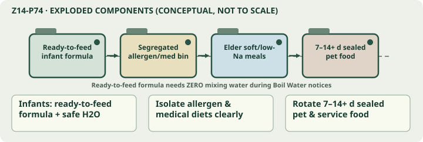

Z14-P74 · Food production and preservation · New manuscript
Plan specialized emergency food stocks for infants, allergies, medical diets, and pets
Prevent dangerous nutritional gaps or allergic reactions among vulnerable household members during multi-week supply disruptions.
When it applies · Households with infants, toddlers, food allergies, celiac/diabetes/renal diets, older adults, or companion animals/service animals.
Equipment · Dedicated labeled dietary bins, ready-to-feed infant formula (or powdered formula + extra safe potable water), and separate sealed pet food/water reserves.

Actions
- Prefer ready-to-feed formula during outages, especially for infants under two months, born prematurely or with weakened immune systems. If only powder is available, follow current CDC and local instructions for the infant and water advisory. Powder is not sterile.[P26, W29]
- Segregate dedicated allergen-free (nut-free, gluten-free, dairy-free) or clinical-diet emergency foods (low-sodium, diabetic-friendly snacks, dysphagia soft foods) clearly in separate labeled bins—community disaster shelters often cannot guarantee safe specialized allergen meals.[P15, T10]
- Store at least 7 to 14+ days of dry/canned pet and service-animal food (plus manual can opener and extra pet drinking water) inside rigid chew-proof bins rotated on the exact same FIFO schedule.[P15, D17]
Failure recognition · Discovering during a 5-day blizzard that the emergency pantry consists entirely of peanut butter and wheat pasta while a child has celiac disease and nut allergy.[P15, T10]
Verify · Confirm ready-to-feed infant formula or extra safe mixing water, segregated allergen/medical bins, and dedicated pet/service-animal food rotated fresh.[P15, D17, W29]
Stop or change course · Exhausting specialized infant formula or critical medical-diet supplies during an extended outage requires contacting local public-health/emergency agencies early before stocks run out.[P15, T10]
Evidence and editorial notes
- D17 · FEMA / Ready.gov · Prepare Your Pets for Disasters (current web edition)
- Section: Pet, Service-Animal, and Vulnerable-Member Accountability · Conditions: Households with pets, service animals, children, older adults, or access/functional needs
Support: Include leashes, carriers, vaccination records, pet food/water, and pet-friendly shelter lists in household evacuation plans—never leave pets chained or trapped behind; coordinate explicit buddy assignments for children, older adults, and mobility/power-dependent household members.
Limitations: General public Red Cross shelters always admit service animals under ADA rules, whereas companion pets often require separate co-located or pet-friendly shelters. · Conflicting evidence: None; complements T10 disability planning.
Editorial note: Ensures complete household and vulnerable-group accountability in Z15. · Specialist reviewer: Accessible emergency management and animal welfare
Primary source · checked 2026-11-24 - P15 · FEMA / Ready.gov · Emergency Food Supply (current web edition)
- Section: Emergency Food Inventory > Non-Perishable Rotation, Dietary Needs, and Tools · Conditions: Household multi-day to 30-day emergency pantry planning
Support: Build a rotated pantry of familiar shelf-stable foods requiring minimal water and no refrigeration (canned proteins/vegetables, dry grains/legumes, nut butters, infant/medical/pet diets), keep a manual can opener, and mark purchase/rotation dates clearly (FIFO).
Limitations: Do not invent unverified multi-decade shelf lives; commercial "Best By" dates reflect quality while damaged, rusted, or dented-seam cans pose safety hazards. · Conflicting evidence: None; aligns with FSG-4 and NCHFP storage hygiene.
Editorial note: Grounds household food inventory, FIFO rotation, and can-integrity screening. · Specialist reviewer: Household preparedness and food safety
Primary source · checked 2026-11-24 - P26 · CDC · Prepare and Store Powdered Infant Formula in an Emergency (2024)
- Section: Ready-to-feed preference and special considerations · Conditions: Formula-fed infant in an emergency with uncertain water or sanitation
Support: Use ready-to-feed if available, especially for infants under two months, premature infants and those with weakened immune systems. If powder is necessary, follow the CDC and local instructions for safe water, preparation, hygiene and storage.
Limitations: Powder is not sterile. Boiling the water does not by itself address the powder, special population or chemical-water issues. · Conflicting evidence: See A02 claim audit for boundaries.
Editorial note: Added in A02 to separate a consequential source boundary. · Specialist reviewer: Pediatrics and public health
Primary source · checked 2026-11-25 - T10 · FEMA / Ready.gov · People with Disabilities (current web edition)
- Section: People with Disabilities > Make a Plan and Build a Kit · Conditions: Individuals with mobility, sensory, medical, or power-dependent access and functional needs
Support: Build a personal support network, plan accessible evacuation transport, register voluntarily with local emergency registries where available, and plan backup power and spare supplies for medical devices, medications, and service animals.
Limitations: Local registry availability and utility priority-restoration policies vary by jurisdiction. · Conflicting evidence: None; extends generic preparedness plans to accessible requirements.
Editorial note: Directly addresses Z01 accessible emergency planning requirement. · Specialist reviewer: Accessible emergency management and disability preparedness
Primary source · checked 2026-11-24 - W29 · CDC · How to Make Water Safe in an Emergency (2024-09-19)
- Section: Use safe water for drinking, brushing teeth and food preparation · Conditions: Applicable emergency-water advice and permissible uses under active local advisory
Support: Use confirmed safe water for oral and food-contact tasks. Follow current local instructions for each use.
Limitations: Infant formula requires separate P26 conditions. Wound care requires the appropriate care source. · Conflicting evidence: See A02 claim audit for boundaries.
Editorial note: Separates potable-required tasks from non-potable utility uses. · Specialist reviewer: Public health and wilderness medicine
Primary source · checked 2026-11-24
Source lineage · FEMA Ready.gov Food and Pets; new manuscript · Classification · New manuscript.